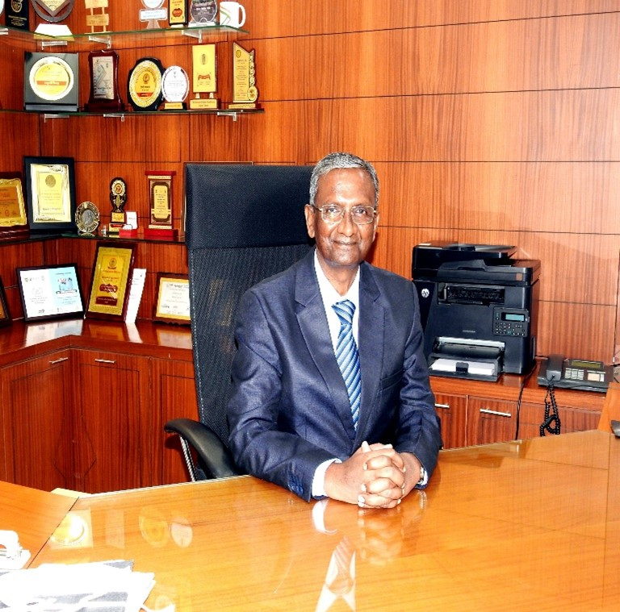

Shri.Ravi Sharma
Professor Prem Lal Patel, Director, VNIT, Nagpur took over the additional charge as Director of IIIT, Nagpur on 1st October, 2024. He is Professor (HAG) of Hydraulics and Water Resources in Department of Civil Engineering, Sardar Vallabhbhai National Institute of Technology (SVNIT), Surat. He served as Deputy Director of the Institute (SVNIT) during Sept 17, 2019 to Sept. 16, 2022. He worked as Dean (PG), Dean (R&C), Dean (Academic) and the Head, Dept. of Civil Engineering at SVNIT Surat. Prior to joining SVNIT in 2007, he served as Associate Professor, Civil Engineering Department in Delhi College of Engineering (now DTU) for eight years. Prior to working at DCE, he served as Assistant Executive Engineer (Civil) in Border Roads Organization (BRO), Ministry of Road Transport and Highways of India, Govt. of India from 1995-1999.
He did his Bachelors in Civil Engineering from Government Engineering College, Rewa, Madhya Pradesh, India and then, pursued his Master and Doctoral Degrees in Civil Engineering from Indian Institute of Technology Roorkee, India (the then University of Roorkee).
His research areas include River Mechanics and Flood Control; Hydrological Modelling and optimization of water systems; and Impact of climate change on water resources system. He guided 14 Doctoral Theses, 49 Master Theses and executed more than six high values sponsored research projects and more than 25 Consultancy Projects. He has more than 260 papers in peer-reviewed journals and conferences of repute. He is a member of various Technical Societies and Expert Committees. Prof. Patel visited various countries like the United States of America, Netherlands, China, Italy, Japan and Dubai for presenting his research work.
He was earlier in climate changing working group of IAHR dealing with Fluvial Mechanism. He is also Fellow member of Indian Society for Hydraulics, Indian Water Resources Society and Institution of Civil Engineers, India. He has been instrumental in setting up a Centre of Excellence (CoE) on Water Resources & Flood Management in the SVNIT Surat through research grant from World Bank sponsored TEQIP-II.